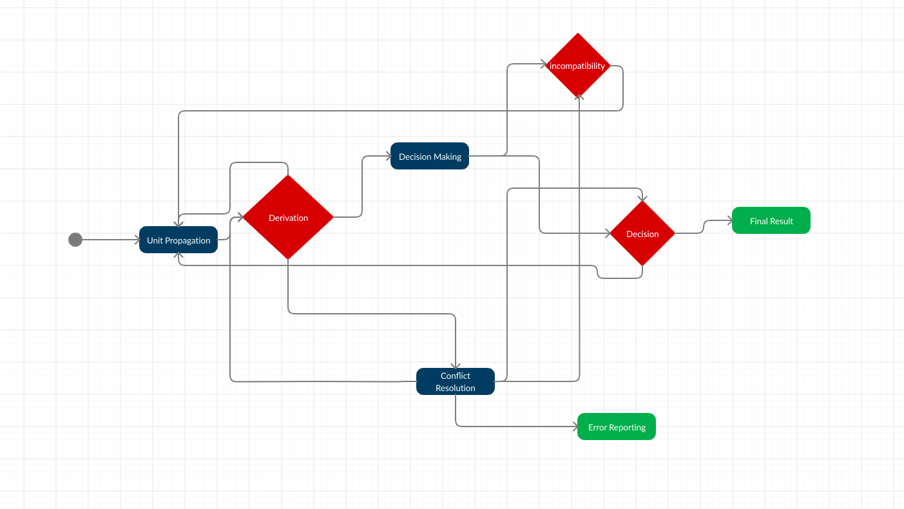
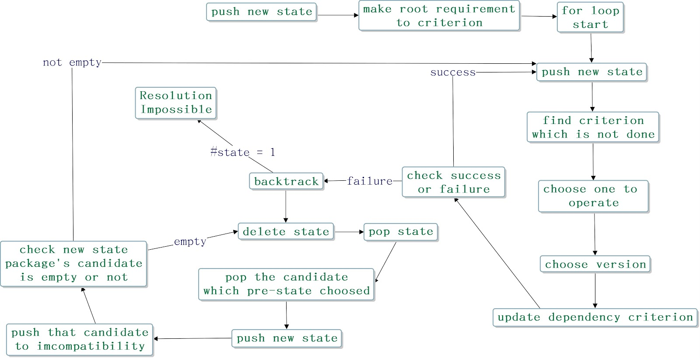

Article
What is package resolving
Package resolving is used for package installers to resolve which version of package can install. It's a sat-problem which is NP-Complete. For example, if I give the package installer what kind of package I want to install (we called it constraints), [numpy >= 1.0.0; panda >= 2.16.0], package installer need to compute which package will fit the constraints, maybe the result will be [numpy 2.6.0; panda 2.16.5].
But usually it won't be that simple, assume [numpy 2.6.0] need another package [numpy-tools >= 2.0.0] (we called dependencies for numpy), package installer need to count it in and install it, so the install result might be [numpy 2.6.0; numpy-tools 2.6.0; panda 2.16.5].
So there will be more problems here. If the dependency need something we can't fit, for example [panda 2.16.5]'s dependency is [panda-tools <= 2.16], and [panda-tools 2.16.0]'s dependency is [tool-pack >= 2.10.0], [numpy-tools]'s dependency is [tool-pack == 2.6.0]. Obviously, there will be no answer to fit constraints, so the conflict happened. Package installer needs to find another version of the package to try whether it can be solved or not. If there is no combination of packages that can satisfy all dependencies without any conflict then we will call this situation “resolve impossible” which means the version solver can’t find the correct pattern of packages to satisfy the user's requirement. Otherwise, if the version solver can find a combination of packages that can satisfy all dependencies without any conflict then we will say it resolves successfully and the user's requirement is achievable.
Pubgrub algorithm
Pubgrub has four steps basiclly.
1.Unit propagation(find a specify package range) 2.Decision making (choose one version in range)3.Conflict resolution (if conflict,do that process)4.Error reporting--you can check more information in our-slides-
Resolvelib in pip
Resolvelib want to choose latest version and just linearly find package's version
Pip
pip is a package installer for Python and we can use pip to install packages from the Python Package Index and other indexes. The most common function we use is to use pip to install specific packages and specific versions just like this command - "pip install numpy > 1.0.0". The outcome of this command is to install numpy which version will meet the constraint of “numpy > 1.0.0”, numpy’s dependencies, its dependencies’ dependencies , and so on and so on until everyone’s dependencies are satisfied in our computer.
How do pip know what packages are numpy needed and which version of dependency is numpy needed ?
First, pip can check numpy internally to know what packages are numpy needed and which range of dependencies numpy accept.
Second, pip will use the information of what packages the computer has already installed and the information of numpy to compute what package version we should install actually to avoid the happening of conflict. The technique that pip uses is backtracking, backtracking is an algorithmic-technique for solving problems recursively by trying to build a solution incrementally, one piece at a time, removing those solutions that fail to satisfy the constraints of the problem at any point of time. How do pip build the solution incrementally ? The answer is that pip will try to choose a specific version of the package, usually the latest one from an available range which means it will satisfy the constraint. After trying to choose a version of the package, we will get the new constraint because we choose a new package and it may have its own dependencies. Then we will check whether the intersection of new constraint and old constraint is an empty set or not, if it is an empty set which means conflict has occurred and we must abort the latest chosen to go back to the state of no conflict and choose another version of the package. Otherwise, if the intersection is not an empty set which indicates this choice is temporarily acceptable and we can do the next chosen. There are two probable outcomes in this algorithm, the first one is resolved successfully which means pip find a combination of packages that satisfy all constraint without any conflict, in this case, user’s requirement will be accomplished, the second one is resolved impossible which means pip can find any correct pattern of package to satisfy all constraints, in this case, user’s requirement will not be achieved.
In this section, I just mention a part of functionalities of pip which is also the part highly related to our graduate project. If anyone is curious about the strength of pip, there is the link of pip's document.